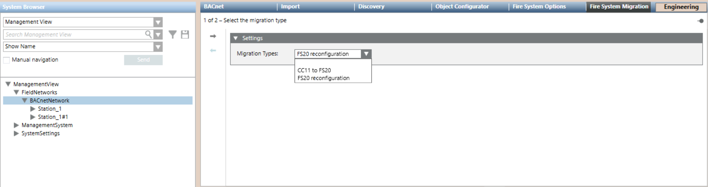
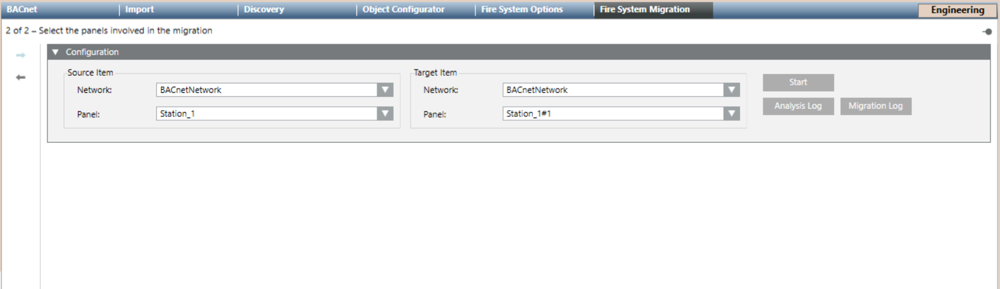

Reconfiguring FS20
Scenario
You want to reconfigure one or more fire panels of an existing FS20 system without losing the fire object references configured in the Desigo CC applications.
The reconfiguration may be necessary when:
- The fire panel configuration was changed to modify the previous BACnet IDs.
- The fire panel was moved from one BACnet network to another, for example after a network split or merge.
- The fire network connection was moved from a Desigo CC server to a FEP or vice versa.
In all such cases, you need to change the Desigo CC configuration, but you may want to save the fire object references in Desigo CC applications such as graphics, user-defined views and more.
The re-configuration described in this section is a migration process that you can start from the main BACnet network node.
This migration can automatically arrange the fire object references from the existing fire panel node to your new fire panel node.
NOTE 1: In case of a site merge, the procedure also applies to panels whose BACnet ID has not changed.
NOTE 2: In the main BACnet network node, the Fire System Migration tab is available when at least two fire panels have been imported in one or more FS20 BACnet networks.
For background information, see the reference section.
Prerequisites
- The appropriate panel extension is installed and included in the active project.
- The Danger Management Common extension is installed and included in the active project.
- In Desigo CC, the fire panel you want to reconfigure is fully configured.
- In the FS20 tool, you have modified the fire panel configuration as necessary, and exported the SiB-X file.
NOTE: In the new fire panel configuration, you can set a new BACnet ID or reuse the same BACnet ID.
In the first case, keep track of the old and new BACnet IDs that you can use to match the correct pairs during the migration procedure.
The second scenario, reusing the same BACnet ID, is only supported if you create a new BACnet network in Desigo CC AND associate a new BACnet driver to the network. - System Manager is in Engineering mode.
- System Browser is in Management View.
- You have full scope visibility of all fire objects in both the Source and Target panel.
- You have full scope visibility of all objects involved in the reconfiguration (see FS20 Reconfiguration Limits and Compatibility).
1 – Configure the FS20 Fire System
Before starting the migration procedure, you need to configure the new fire panels in Desigo CC.
You can use the existing fire BACnet network or create a new one, depending on the required changes.
Proceed as follows (in the Subsystem Integration section, you can refer to the step-by-step procedures of your specific FS20 fire system).
- If necessary, configure the BACnet network and driver for the new FS20 according to the new BACnet plan.
NOTE: A BACnet driver can handle more than one BACnet network, and you may use the same driver for the old and the new network.
However, if the new panel configuration has the same BACnet ID (BACnet Device Instance numbers in Desigo CC) as the old configuration, you must use different drivers on the two networks. - Import the SiB-X file and complete the new fire panel configuration.
NOTE: Do not configure any application for the objects affected by the migration. Refer to FS20 Reconfiguration Limits and Compatibility. - Take a project backup that can allow you to adjust the configuration and start again in case of migration errors.
2 – Run the Reconfiguration Procedure
- To speed configuration, make sure the Desigo CC Transaction Mode is set to
Simpleor the Automatic Switch of Transaction Mode is set toTrue.
The automatic switch setting is recommended. Without it, to re-enable the logs, you need to set the Transaction Mode toLoggingat the end of the configuration procedure.
- In System Browser, select Project > Field Networks > [BACnet Network].
NOTE: In case the two FS20 are on different networks, select the BACnet network where the new FS20 is connected. - Select the Fire System Migration tab.
- Page 1 of 2 displays: Select the migration type.
- In Migration Types, select FS20 reconfiguration.

- Click
 to proceed to the next page.
to proceed to the next page. - Page 2 of 2 displays: Select the panels involved in the migration.
- In Source Item, select the Network where the old FS20 is located, then the Panel itself.
- In Target Item, select the Network where the new FS20 is located, then the Panel itself.
- Click Start.
- The System Manager dialog box appears, click Yes to confirm the start of the migration process.
- The migration procedure replaces old FS20 objects with new FS20 objects in all applicable cases (see FS20 Reconfiguration Limits and Compatibility).
NOTE: In case of object mismatch during the search a System Manager dialog box appears, click Yes to proceed anyway. - The Migration Log button become available.
- Click Migration Log to show the import log.
For information about the log files, see the reference section.

3 – Complete the Reconfiguration Procedure
Manually Replace Non-migrated References
In Desigo CC elements that are not migrated, you need to substitute the references to fire objects manually. Refer to FS20 Reconfiguration Limits and Compatibility.
Remove FS20 and BACnet Network
The migration procedure does not remove the old fire system from Desigo CC. You can remove it manually as follows:
- In System Browser, select Project > Field Networks > [BACnet Network].
- In the Fire System Options tab, select the old file units in turn and click Delete
 .
. - If the BACnet network is longer required, select [BACnet network], the BACnet tab and click Delete .